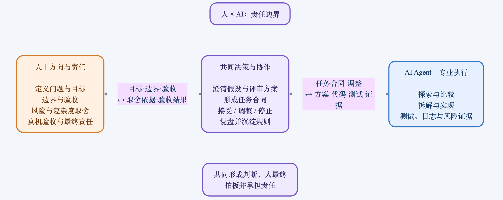
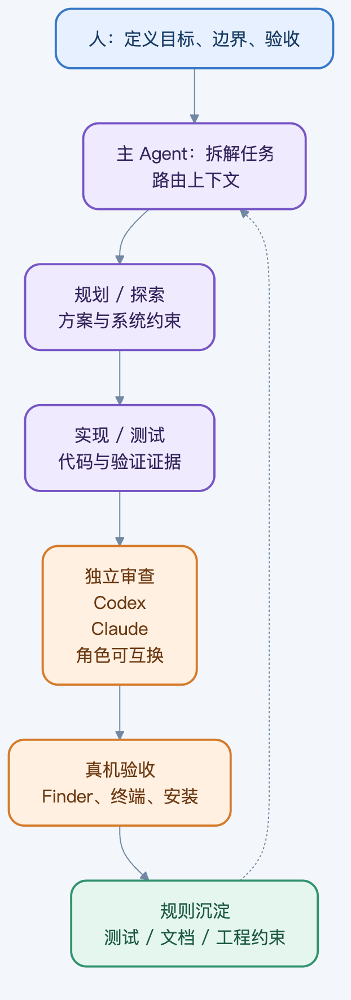
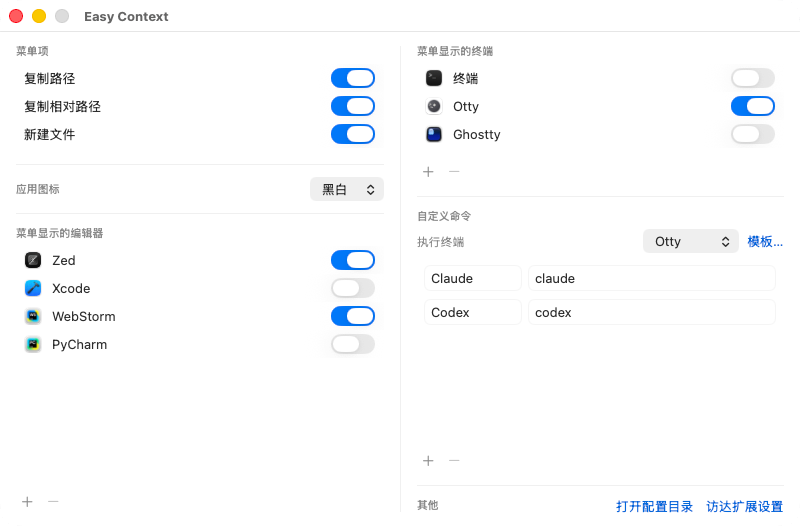
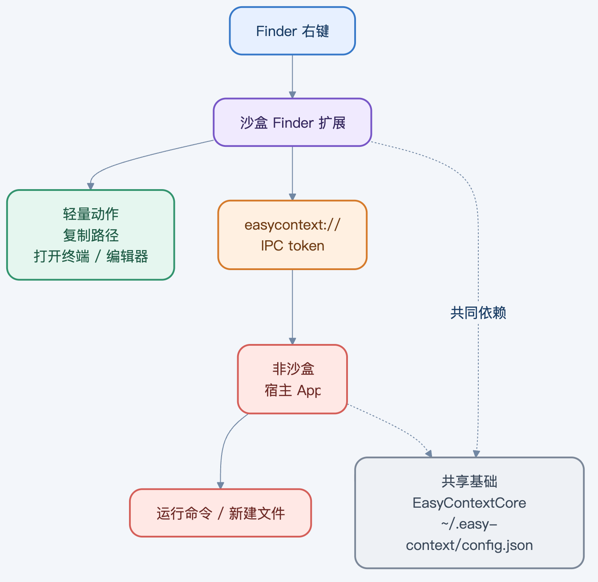
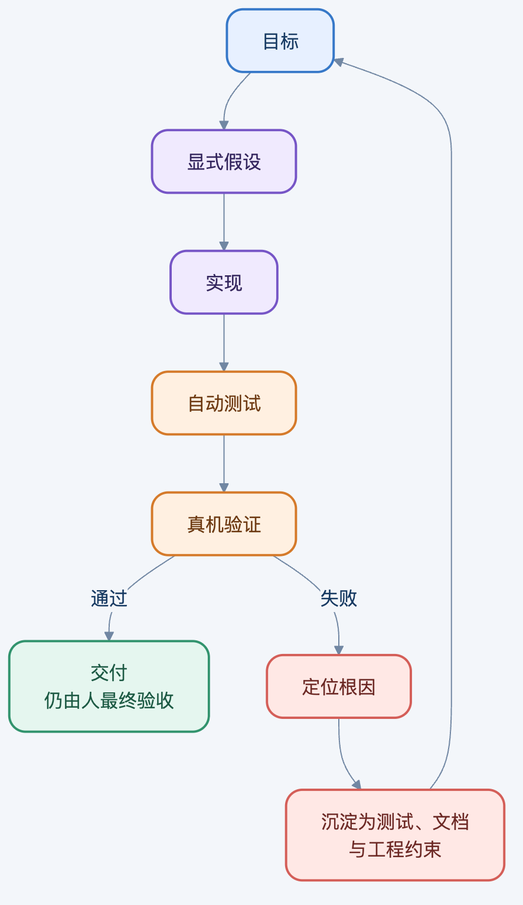

*从一个 Finder 右键菜单的痛点出发，到和多位 AI Agent 一起把它做成可安装的 macOS 工具。*
十年前，我从 Windows 转到 macOS，最不习惯的是 Finder 的右键菜单。后来我付费买了 Easy New File，长期用它的新建文件、复制路径和打开终端等日常功能。
到 2026 年，Ghostty、Muxy、cmux、Otty 等新终端与工作流陆续进入我的视野，原有工具已经难以覆盖需求。我找过替代品，但没有一款足够顺手。
于是我决定自己做一个：Easy Context。它服务于 Finder 的“当前目录”——在这里打开终端或编辑器、复制路径、创建文件，以及执行自定义命令。
我是一名前端开发者，此前没有做过复杂的 macOS 原生应用。但过去一年多，我一直在和 AI 协作开发，也做过一款较简单的 macOS 状态栏盯盘 App。这让我相信：陌生技术栈不一定是不能做的边界，而是一块需要拆解和验证的未知区域。
不过，前提不是把一句需求丢给 AI，然后等待一个奇迹。
后来我给这套协作方式找到了一个很贴切的比喻：人是将军，AI 是专业知识极强的超级士兵。
“将军”不是坐在后方只说一句“做个 App”。他的工作是判断为什么打、目标是什么、哪些代价不能接受、什么时候应该改变路线。AI 则拥有很强的专业知识和执行能力：它可以读代码、查资料、比较方案、写测试、实现模块、定位问题，甚至调用更专业的角色一起工作。
所以，Easy Context 的第一步不是写代码，而是规划。
我先描述真实问题：我在 Finder 里要完成什么动作？什么体验不能退让？终端支持要做到什么程度？哪些功能现在必须做？然后让 AI 把这些意图翻译成工程问题：模块怎么拆、风险在哪里、哪些逻辑可先测试、哪些必须到真实 Mac 上验证。
我会先审规划和实现思路，而不是直接收代码。虽然我不熟悉 Swift，但前端开发经验让我能判断很多更底层的事情：职责是否混乱，状态有没有唯一来源，性能是否会被高频操作拖垮，异常路径会不会破坏用户数据，所谓“能跑”的方案有没有把复杂度偷偷留给未来。
这也是 AI 协作中一个常被忽略的事实：不懂某门语言，不等于不能参与技术决策。你不必知道每一个 API 的拼写，但要知道一个长期可用的系统应该守住哪些边界。
*产品要先回到真实场景：它是否让当前目录里的高频操作更顺手。*
把这套协作关系画出来，边界其实很清楚：方向、取舍和最终验收不能外包；探索、执行和证据可以交给 AI；规划、审查与复盘则由双方共同完成。

*建议权不等于决策权，执行任务也不等于承担最终责任。*
在我的工作流里，主 Agent 负责维持全局目标、推进阶段任务；它也可以在需要时调用规划、探索、实现、测试和审查等更专门的角色。
规划 Agent 的任务不是写代码，而是把模糊想法拆成可执行任务：明确依赖、顺序、验证方式和高风险点。探索 Agent 负责进入陌生区域，例如阅读代码、追踪调用关系、核实系统限制。实现 Agent 在给定边界内完成一小块功能。审查 Agent 则专门挑战已有结论，找错误假设和遗漏的边界。
在复杂规划阶段，我会根据问题调整模型和思考深度；在关键节点，也会让 Codex 与 Claude 交叉审查。这里不是给模型排座次，它们的角色是可互换的：一个负责提出方案，另一个负责质疑；一个完成实现，另一个检查是否真的覆盖风险。重要的是，不要让同一条思路从规划、实现到验收一路畅通无阻。
多 Agent 协作最怕的，是每个人都说“我做完了”，却没人知道做完意味着什么。因此我会把任务写成一份小型合同：要解决的问题、允许改动的文件范围、不能破坏的行为、验证命令、需要人工确认的部分，以及交付时必须留下的证据。
实现 Agent 的交付不该只有一句“完成”，而应该包含：改了哪些文件、为什么这样改、运行了什么测试、结果是什么、还有哪些假设没有被验证。审查意见也不能停留在“这里有风险”，而要说明风险影响、复现方式、修复建议和验证路径。

*这张图展示 AI 队伍内部如何分工：任务要让目标、边界与证据被下一位 Agent 接住。*
Easy Context 的第一个重要决定，是先做 Core。
所谓 Core，就是不依赖 Finder 界面、不依赖窗口，也不依赖沙盒权限的纯逻辑：路径处理、配置读写、命令定义、应用检测、相对路径计算等。它们可以脱离原生界面单独测试。
一开始的计划把 Core 拆成若干独立任务：每一项先定义输入和输出，写测试，再实现。等这些基本逻辑稳定后，再去处理 Finder 扩展、终端启动和安装流程。
这样做并不只是为了“工程上更漂亮”。对一个不熟悉原生开发的人来说，它意味着先建立一块可控地带。假如一开始把 UI、扩展、权限、进程、配置、安装全混在一起，任何一个问题都会变成一团线。先把纯逻辑固定下来，后面进入系统集成时，问题至少能被定位到更清楚的层次。
AI 在这个阶段非常有效：它能快速补齐边界测试、保持接口一致、检查遗漏情况。但我会持续提醒它：这是高频工具，性能、边界、内存和数据安全不是“以后再优化”的内容。

*设置页背后并不只是表单：它还承载了多进程共享的命令和配置边界。*
最开始的设想很自然：Finder 扩展识别用户右键的目录，然后自己启动终端、打开编辑器、弹出创建文件的窗口。
真实运行后才发现，macOS 不允许我这么想当然。
FinderSync 扩展必须运行在沙盒环境里，否则系统组件不能正常加载；但进入沙盒后，它又不能像普通应用那样随意启动外部进程。它也不适合承担复杂交互，不能可靠地负责创建文件时的命名窗口。
最初方案必须推翻。
后来，Easy Context 形成了更清晰的职责分工：Core 保存纯逻辑；Finder 扩展负责理解用户在 Finder 中选中了什么、展示什么菜单，并处理复制路径、通过 NSWorkspace 打开终端或编辑器等轻量动作；宿主 App 负责运行自定义命令、显示命名界面，以及处理需要更高系统能力的任务；双方共享配置。
其中最关键的设计叫 host relay，可以理解为“扩展把请求转交给宿主”。Finder 扩展不再亲自完成所有动作，只表达用户意图：请在这个目录执行某个命令，或者请在这里创建一个文件。宿主 App 收到请求后，再去完成需要进程、窗口和权限的部分。
这个架构不是一开始凭空想出来的，而是被系统限制逼出来的。AI 帮我梳理限制、比较方案、定位失败的原因；但是否接受复杂度、如何在响应速度和可维护性之间取舍，仍然是人的工作。

*Finder 扩展靠近用户上下文，宿主 App 承担复杂动作；两者不必抢着做同一件事。*
真正让我对 AI 协作保持敬畏的，是两次错误。
第一次发生在菜单缓存优化之后。为了让 Finder 右键更快，代码加入了缓存，并做了一个自然的假设：菜单是 UI 行为，回调应该发生在主线程。于是加了一条主线程断言。
结果是，每次右键，Finder 扩展都会崩溃。
崩溃日志显示，FinderSync 的菜单回调实际来自 XPC 工作线程。修复不只是删掉断言：缓存需要加锁；磁盘访问和应用查询要移到锁外；图标绘制不能依赖错误的线程上下文；锁和主线程调度之间还要避免死锁。
第二次更极端。相对路径功能的单元测试都通过了，但在真实 Finder 中测试时，某些非 Git 目录会让内存持续增长，几分钟内接近 20GB。
原因是测试里构造的是普通 Swift URL，而 Finder 实际传入的对象存在 NSURL 桥接差异。在某种路径条件下，向上查找父目录的逻辑没有正确停止，不断产生新的 ../ 路径。
最终，路径逻辑改成更明确的字符串遍历，并加入真实 NSURL 桥接对象的回归测试。
这两件事让我重新理解测试：测试通过，证明的只是测试覆盖的那部分世界；它不能自动替代真实环境验证。
因此，Agent 的报告中必须诚实地区分：哪些已经由测试覆盖，哪些只在构建层面验证，哪些仍然需要在真实 Finder、真实终端和真实安装流程中人工确认。
Easy Context 后来还经历了分发方式的调整。最初使用 DMG，后来改为 PKG。原因不只在更新：当前应用采用 ad-hoc 签名、没有做 Apple 公证。App 经网络下载或传输到另一台 Mac 后，系统可能为它附加 quarantine 隔离标记，导致它不能直接启动。开发者知道可以执行 xattr 命令清理；但对普通用户来说，打开终端、输入命令并理解安全提示，已经是一道明显的使用门槛。
PKG 没有让未公证软件从此“零提示”——首次打开这个未签名安装包，用户仍需在系统中手动放行一次。但用户在安装器中输入管理员密码、授权安装后，由 Installer 写入“应用程序”的 App 不带隔离标记。效果上，PKG 替普通用户消除了再进终端执行 xattr 的步骤。安装脚本还会关闭旧版本、注册新版 Finder 扩展、启动宿主 App 并刷新 Finder，让更新后的功能尽快回到可用状态。
一次真机实测中，覆盖安装后出现了约 19 分钟的右键菜单空窗。对开发者来说，构建成功了；对用户来说，产品并没有可用。
这部分很难完全自动化，也最需要人保留最终验收权：我会亲自确认更新后菜单是否出现、命令是否仍在、终端是否真的打开到当前目录、用户的设置有没有丢失。
人负责的，不只是“提需求”。
人要定义问题，决定什么值得做；要在架构方案里判断性能、边界、内存、数据安全和复杂度；要把真实环境中看见的异常带回流程；要决定什么时候继续、什么时候返工、什么时候暂缓一个看似酷但不可靠的功能。
AI 的强项是把这些判断转化为高质量、可追踪的工程动作。它可以比我更快进入 Swift 和 macOS 的细节，但它不会天然知道“覆盖安装后右键菜单消失了 19 分钟”对用户意味着什么，也不会自动为用户的数据安全承担责任。

*每一次真实事故，都应该回到测试、文档或任务规则中，成为下一次协作的护栏。*
做完 Easy Context 后，我依然不是传统意义上的 macOS 原生工程师。我未必能脱离工具从头背出 FinderSync、沙盒和 XPC 的每个细节。
但我已经能带着一支由 AI Agent 组成的队伍进入陌生领域：先把产品目标说清楚，再把任务、边界和验收标准写清楚；让不同角色探索、实现和审查；用测试与真实环境共同验证；把每一次失败沉淀成下一次协作的规则。
这套方法不只适用于 macOS，也不只适用于某一个模型。Codex、Claude，以及未来新的 Agent，都可以是队伍里的超级士兵。它们的专业能力会不断升级，但人要负责的事情没有变：建立共同认知，做关键取舍，索要证据，并在最后确认——这是不是一个真正解决了问题的产品。
Easy Context 已开源，项目地址：github.com/yantaolu/easy-context。
人是将军，AI 是超级士兵。
将军不必亲自使用每一种武器，但必须知道该往哪里走、哪些边界不能越过，以及什么时候才算真的赢下这场仗。
—End—
如果觉得不错 随手点个 赞、在看、转发 三连吧
关注+星标 可第一时间收到更多精彩思考和总结
您的支持是我继续写下去的动力
注：原创不易，合作请在公众号后台留言，未经许可，不得随意修改及盗用原文。